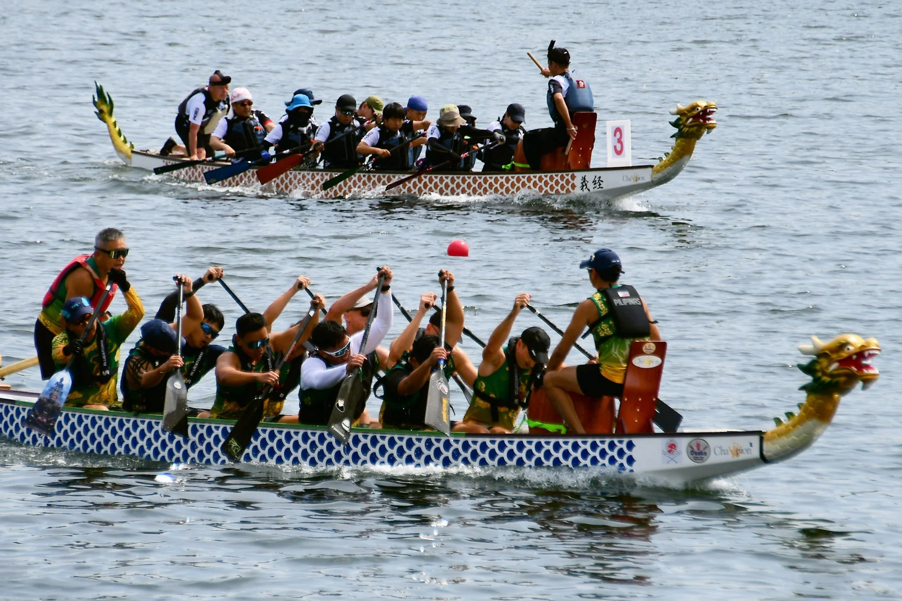
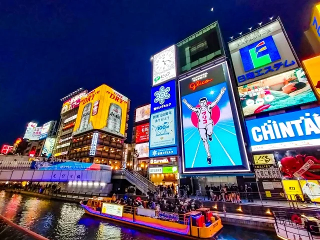

01

THE SAKURA DRAGON CUP EXPERIENCE


Illustrative image (AI-generated)
FIND YOUR RACE

Open
Paddlers: no age or gender restriction.

Women
Paddlers: all female. No age restriction.

Senior B
Paddlers: all 50 years of age or older. No gender restriction.
BEYOND THE FINISH LINE
Free time on both Saturday & Sunday evenings.
APRIL 9–12, 2027
FRI · APR 9
SAT · APR 10
SUN · APR 11
MON · APR 12
FROM ARRIVAL TO RACE DAY
Apr 10 / Apr 11
Official Hotel ⇄ Venue
Large luggage / paddle bags: OK
Detailed times in Bulletin 02.
A place for your team to rest at the venue.
Support for your overseas team throughout the event.
Stay together. Get ready together.
Booking through JTB.
OFFICIAL HOTEL
Official hotel stay is required.
Hotel rates will be announced once confirmed.


Illustrative hotel images. Final images to be confirmed.
SEE YOU ON THE STARTING LINE
¥80,000
per team / per category
Payment deadline
January 31, 2027
¥100,000
per team / per category
Payment deadline
February 28, 2027
Payment via Wise.
Entry is confirmed only after payment is received.
The entry form will be available here once announced.
DOWNLOAD BULLETIN 01Bulletin 01 is being updated to reflect the required official hotel stay.